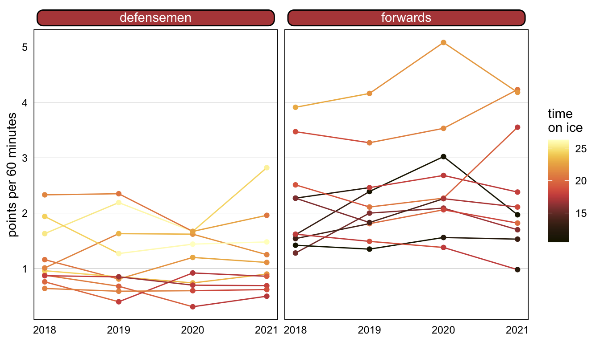

| Season | Player | Points per 60 | Position | Time on Ice |
|---|---|---|---|---|
| 2018 | Auston Matthews | 3.47 | F | 18.55 |
| 2019 | Auston Matthews | 3.27 | F | 20.97 |
| 2020 | Auston Matthews | 3.53 | F | 21.55 |
| 2021 | Auston Matthews | 4.23 | F | 20.61 |
| 2018 | Connor Brown | 1.54 | F | 13.79 |
| 2019 | Connor Brown | 1.81 | F | 20.11 |
| 2020 | Connor Brown | 2.06 | F | 18.24 |
| 2021 | Connor Brown | 1.82 | F | 20.06 |
When are mixed effects appropriate?
Venturing beyond the safe and comfortable land of a basic linear regression model generally requires a good reason (of which there are many!). I recently ran up against one of those boundaries thanks to the structure of the data that I was working with, and I ended up learning a lot about and eventually building a mixed effects model. I’m really proud of that model, but sadly, it’s confidential and also likely boring if you aren’t in my line of work.
So to illustrate some of what I learned about mixed effects models (also sometimes known as multilevel models), I’m going to use a small and silly hockey example. (Silly because this example is small, just for tutorial purposes. An actual model to gain insights on this dependent variable would have more data, selected with more care. Make no conclusions from this!) I’ll use this example to discuss when you might want to use a mixed effects model, what exactly we mean by mixed effects, and how to run this kind of model in R using either lme4 or tidymodels. I’ve also included some of my favorite resources on this topic at the end.
My data set for this example has 80 observations and five variables (a sample is shown below). Points per 60, abbreviated as pp60, is our dependent variable: it’s the measure of a player’s total points in a given season per 60 minutes of game play. We also have two independent variables: the player’s position (either D for defenseman or F for forward) and their time on ice (abbreviated as toi), the average minutes they played per game.
One of the basic assumptions of a linear regression model is that your observations are independent of each other. The glimpse of the data set above should set off immediate alarm bells because these observations are not independent: we have four observations per player (one for each of the previous four seasons), and I wouldn’t be comfortable saying that a player’s offensive performance this year is necessarily fully independent from his performance last year. This is a good example of longitudinal data, where there are repeated observations over time of the same subject, and longitudinal data is a good use case for a mixed effects model.
What are mixed effects, exactly?
Before we continue through this example, what exactly are these mixed effects that we’re referring to here? A mixed effects model contains both fixed and random effects. Fixed effects are the same as what you’re used to in a standard linear regression model: they’re exploratory/independent variables that we assume have some sort of effect on the response/dependent variable. These are often the variables that we’re interested in making conclusions about.
Where a mixed effects model differentiates itself is through the inclusion of random effects, which allow us to skirt past that independence assumption. Random effects are simply categorical variables that we’re interested in controlling for—even if we aren’t particularly interested in quantifying their impacts or knowing more about the specific levels—because we know they’re likely influencing the patterns that might emerge. This variable often has many possible levels, and there’s likely just a sample of the population in your data. In the example we’re going through today, the random effect is the player.
In this example, given the repeated observations, I want to allow for the possibility that there is some type of individual player effect that is not measured by my other (independent, fixed) variables. I’m not particularly interested in quantifying the effect of “being Player X” on scoring rate, I just want to address that the effect exists. (In contrast, I am interested in the effect of position and the effect of time on ice, our two fixed variables.)
For example, Connor Brown and Auston Matthews are both forwards who averaged around 20 minutes per game last year. By the two fixed effects included in this very small model, they would produce a very similar response variable. But as anyone who watches hockey can tell you, Auston Matthews is much more offensively talented than Connor Brown, and in this model, the random effect of the player will address some of that. Random effects are useful for capturing the impact of persistent characteristics that might not be observable elsewhere in the explanatory data. In this example, it can be thought of as a proxy for player “talent” in a way.
If those random effects are correlated with variables of interest, leaving them out could lead to biased fixed effects. Including them can help more reliably isolate the influence of the fixed effects of interest and more accurately model a clustered system.
Prepping the data
We can plot this data to understand it a bit better. We have four observations each for 20 separate players, 10 forwards and 10 defensemen, and we can see that in general, forwards tend to score more points and defensemen tend to play more minutes.

Because this data is so small, I don’t need to do much to get it in better shape for modeling—I’m just going to make sure the position variable is a factor. This df data frame will be the basis of the model.
df <- data_raw %>%
mutate(position = factor(position))Running the model with lme4
The lme4 package in R was built for mixed effects modeling (more resources for this package are listed below). If you’ve used the lm function to build models in R, the model formulas will likely look familiar.
The simplest version of a mixed effects model uses random intercepts. In this case, the random effect allows each group (or player, in this case) to have a different intercept in the model, while the effects of the other variables remain fixed. The code below creates the m1 model with pp60 as the response variable, position and toi as the fixed effects, and (1 | player) as the random effect for the intercept. The | is just a special interaction to make sure that the model has different effects for each level of the grouping factor (in this case, for each player).
m1 <- lmer(pp60 ~ position + toi + (1 | player),
data = df)
summary(m1)Linear mixed model fit by REML ['lmerMod']
Formula: pp60 ~ position + toi + (1 | player)
Data: df
REML criterion at convergence: 115.9
Scaled residuals:
Min 1Q Median 3Q Max
-2.1327 -0.4468 -0.1237 0.3489 3.0031
Random effects:
Groups Name Variance Std.Dev.
player (Intercept) 0.4126 0.6423
Residual 0.1192 0.3452
Number of obs: 80, groups: player, 20
Fixed effects:
Estimate Std. Error t value
(Intercept) -0.16546 0.58054 -0.285
positionF 1.48931 0.31861 4.674
toi 0.06254 0.02531 2.471
Correlation of Fixed Effects:
(Intr) postnF
positionF -0.573
toi -0.932 0.358summary(m1), as shown above, will produce a familiar-looking results table where you can examine the fixed effects. Being a forward is associated with a higher scoring rate, which makes sense. There’s also some information about the random effects, mainly how much variance we have among the levels and how much residual variance there is. We can tell in this example that the player is explaining a lot of the variance left over from the fixed effects.
To view the individual random effects, use the ranef function from the lme4 package. We can see from this sample that players known to be offensive stars, like Auston Matthews and Connor McDavid, have understandably high values.
ranef(m1)| grpvar | term | grp | condval | condsd |
|---|---|---|---|---|
| player | (Intercept) | Andy Greene | -0.3922248 | 0.1666845 |
| player | (Intercept) | Auston Matthews | 0.9550296 | 0.1666845 |
| player | (Intercept) | Brett Pesce | -0.1144402 | 0.1666845 |
| player | (Intercept) | Calle Jarnkrok | -0.5214549 | 0.1666845 |
| player | (Intercept) | Connor Brown | -0.6018354 | 0.1666845 |
| player | (Intercept) | Connor McDavid | 1.5091598 | 0.1666845 |
| player | (Intercept) | Esa Lindell | -0.3970716 | 0.1666845 |
| player | (Intercept) | Garnet Hathaway | -0.5542113 | 0.1666845 |
| player | (Intercept) | Jason Spezza | 0.1923681 | 0.1666845 |
| player | (Intercept) | Neal Pionk | 0.1609786 | 0.1666845 |
Just like with other models, this model can be predicted with predict(m1). If you don’t want random effects to be included in your prediction, use predict(m1, re.form = NA).
Running the model with tidymodels
If you’re familiar with and prefer using the tidymodels framework, you can use the lmer engine to run this model. You’ll need both the tidymodels and multilevelmod packages installed.
Set the specification with set_engine("lmer") and then fit like you usually would with tidymodels.
lmer_spec <-
linear_reg() %>%
set_engine("lmer")
using_tidymodels <-
lmer_spec %>%
fit(pp60 ~ position + toi + (1 | player),
data = df)
using_tidymodelsparsnip model object
Linear mixed model fit by REML ['lmerMod']
Formula: pp60 ~ position + toi + (1 | player)
Data: data
REML criterion at convergence: 115.8825
Random effects:
Groups Name Std.Dev.
player (Intercept) 0.6423
Residual 0.3452
Number of obs: 80, groups: player, 20
Fixed Effects:
(Intercept) positionF toi
-0.16546 1.48931 0.06254 The code above results in the same model and the same fixed effects we saw before. Other elements of the tidymodels workflows are available; more details are here.
To get the random effects of a given model built this way, run lme4::ranef(using_tidymodels$fit).
More applications
This particular example is focused on longitudinal data, but mixed effects models are useful whenever there’s any kind of clustering effect where the group is likely affecting the outcome. These effects can even be nested (e.g., studying test scores within schools that are within districts). Generally if the data has some sort of nested/hierarchical structure, that’s when you’ll start to see the “multilevel model” terminology, although the principles are the same.
More details on those multilevel models are available at the links below, but the model formulas would be very similar. If you have nested groups, a random effect structured like (1 | v1 / v2) would mean intercepts varying among v1 and v2 within v1.
If it’s not apparently obvious, how can you tell if your data is clustered? You can start by plotting it! The data behind our example is plotted below. Each color in the plot is a different player, and just by a little manual inspection, we can see that the data appears to be clustered.
You can also investigate clustering by creating a simple null model, which only has the intercept and the random effect. The summ function within the jtools package will helpfully provide the ICC, or intraclass correlation coefficient, which can help identify clustering. This data has a value of 0.89, which is quite high and good evidence that a mixed effects model is necessary here.
m0 <- lmer(pp60 ~ 1 + (1 | player),
data = df)
jtools::summ(m0)| Observations | 80 |
| Dependent variable | pp60 |
| Type | Mixed effects linear regression |
| AIC | 130.78 |
| BIC | 137.93 |
| Pseudo-R² (fixed effects) | 0.00 |
| Pseudo-R² (total) | 0.89 |
| Est. | S.E. | t val. | |
|---|---|---|---|
| (Intercept) | 1.78 | 0.22 | 8.10 |
| Group | Parameter | Std. Dev. |
|---|---|---|
| player | (Intercept) | 0.97 |
| Residual | 0.34 |
| Group | # groups | ICC |
|---|---|---|
| player | 20 | 0.89 |
Varying slopes
The simple example above used a varying intercept, where each player (our random effect) had an adjustment to the overall intercept. But more complexity can be added to a mixed effects model by also incorporating random slopes, which would allow the effect of the selected variable(s) to vary across subjects.
If, for example, we wanted to incorporate an age variable into our model and we wanted the influence of that variable to vary by player, it would be incorporated like so, before the | player:
m_slope <- lmer(pp60 ~ position + toi + (1 + age | player),
data = df)Those resulting random effects would be available just like with the intercepts, by using ranef(m_slope).
Resources
This was intended to be a beginner’s guide to mixed effects modeling with a simple example. For more details, both technical and theoretical, I found all of the following resources helpful:
- An interactive visualization: particularly useful for understanding random intercepts vs. slopes
- Beyond multiple linear regression: especially chapters 8 & 9, lots of examples and good interpretation notes
- Mixed models with R: great online book
- Ch. 9 of Data Analysis in R: useful for theory
lme4vignette: pretty technical but helpful formulas in table 2- Introduction to mixed effects modeling: useful walkthrough
- Introduction to linear mixed models: good tutorial
- A video on multilevel modeling with lme4